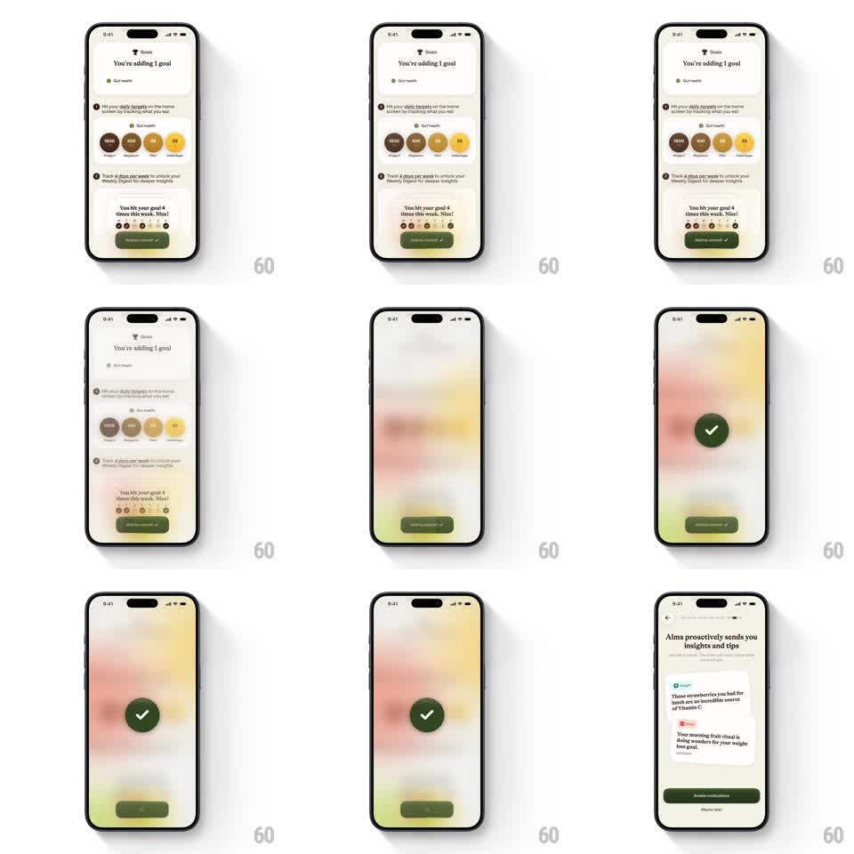

Media
Frame-by-frame

Rebuild this interaction 1:1: Alma's hold-to-commit - pressing and holding the green button fills it up while the whole screen blurs away behind it, and on completion a big check circle bounces in over the pastel blur.

Rebuild this interaction 1:1: Alma's hold-to-commit - pressing and holding the green button fills it up while the whole screen blurs away behind it, and on completion a big check circle bounces in over the pastel blur.
## Integration
Integration: stack-agnostic spec - springs given as stiffness/damping, timed motions as duration + curve; map every value to your framework and animation library of choice.
## Scene
Alma goal screen, cream: "Goals / You're adding 1 goal" with a Gut Health chip, numbered instruction rows, a stat card, and the dark-green "Hold to commit ✓" button pinned at the bottom. Success state: the screen fully blurred to a pastel wash, a dark-green circle with a white check at center, and a muted button ghost below.
## Motion spec
Pattern: hold-to-fill commit with progressive backdrop blur and a bouncy success check.
- Touch down on the button: its fill sweeps left to right over 900ms (linear), the label dimming as the fill passes under it; haptic ticks every 100ms of the hold.
- The backdrop blurs in step with the fill: blur radius 0 -> 24px mapped to fill progress, and the screen's colors wash into a soft pastel gradient - the world recedes as you commit.
- Release before full: the fill drains back (400ms) and the blur unwinds with it.
- At 100%: the button's fill flashes once (opacity pulse, 150ms), then the success circle springs in at center (scale 0 -> 1, spring ~350/13, strong bounce) with the white check drawing on (stroke, 250ms) at the bounce's peak.
- The circle holds 700ms over the blur, then everything transitions: blur fades (400ms) as the next screen ("Alma proactively sends you insights and tips") slides in from the right (300ms).
## Calibration
- The blur is the feedback - the button fill and the backdrop must move in lockstep.
- The success circle is big (~96px) and the bounce is generous - this is the app's celebratory register.
## Reduced motion
Button fills on tap (500ms); backdrop crossfades to the wash; check fades in (250ms).
## Don't miss
- The button's label stays legible over the fill - invert its color as the fill passes.
- The blur wash keeps the screen's color palette (warm pastels) - it blurs, never greys.